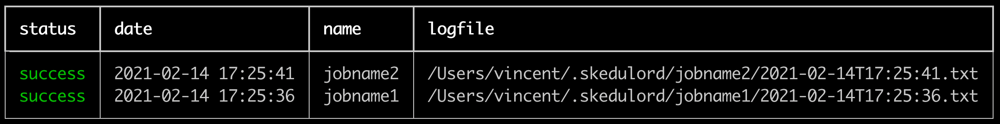
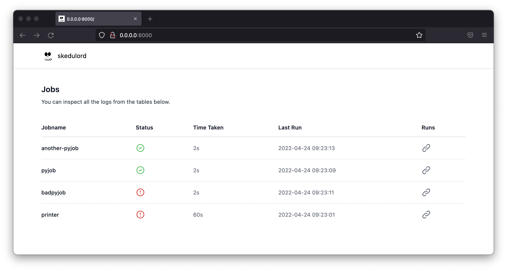

Getting Started
Let's say we've got this small python file.
# script.py
for i in range(5):
print(f"i am at iteration {i}")
The idea here is that skedulord can run this and keep track of logs.
python -m skedulord run jobname1 "python script.py" --retry 3 --wait 60
python -m skedulord run jobname2 "python script.py" --retry 3 --wait 60
This will run the "python script.py" command as if you'd normally run it
from the command line. The skedulord parts around it do some extra things though.
Logs¶
The main thing skedulord does is structure logs from your scripts. The logs
are generated in a structured format so it's easy to find bugs. When we ran
the skedulord run command we attached a jobname (aptly named "jobname") which
will also be the name of the folder where logs can be found.
> tree ~/.skedulord/
/Users/vincent/.skedulord/
├── heartbeat.jsonl
├── jobname1
│ ├── 2021-02-14T16:56:34.html
│ └── 2021-02-14T16:56:34.txt
└── jobname2
├── 2021-02-14T16:56:35.html
└── 2021-02-14T16:56:35.txt
The logs themselves have a timestamp as the filename. There are basic .txt logs
but also fancy .html logs which render nicely in a dashboard.
Mechanics¶
We've designed skedulord to also be able to rerun jobs if they fail. Hiccups are
part of real life and sometimes we can make a job succeed by trying again 5 minutes
later. This is why you can specify how many attempts you'd like the job to make by
setting --retry. You can also specify the wait time between attempts via --wait.
Schedule¶
The nice thing about skedulord running from the command line is that you can schedule
it via crontab too! The downside is that it can get complex. You'd need to ensure that
the jobs have access to the correct virtual environments and this can become a drag.
To help out, skedulord can also configure cron for you by configuring a .yml file.
# schedule.yml
user: vincent
schedule:
- name: ping
command: python /home/vincent/path/scripts/ping.py
cron: "*/2 * * * *"
- name: github issues downloader
command: python /full/path/to/cli.py --repo foobar --output /Users/vincent/data
cron: "0 1 * * *"
- name: github actions downloader
command: python /full/path/to/scrape.py --repo foobar --output /Users/vincent/data
cron: "0 1 * * *"
Note that it's important to give full paths to files here.
Given a schedule like this, skedulord can schedule everything via;
python -m skedulord schedule schedule.yml
You can confirm yourself that all jobs are now scheduled to run, with skedulord taking care of all the logging.
crontab -e
Note that Unless configured otherwise, skedulord will assume the same virtualenv as the one that ran the
skedulord schedulecommand. This is important to be aware of if your scripts carry dependencies.
Inspection¶
Hopefully, your jobs won't fail. But if they do, you'd want to find the logs for the broken jobs as soon as possible.
python -m skedulord history

This history command has many query parameters that makes it easy for you to find the logs of the jobs that failed.
Dashboard¶
If you want, you can even use skedulord to run a small dashboard for you. It's nice and minimal as to not to distract you.
python -m skedulord serve

Shutting Down¶
If you're done with the app you can wipe the cronjobs and disk state from the command line as well.
# Wipe all the logs from disk.
python -m skedulord wipe disk --yes --really
# Wipe all the cron entries.
python -m skedulord wipe cron --yes --really